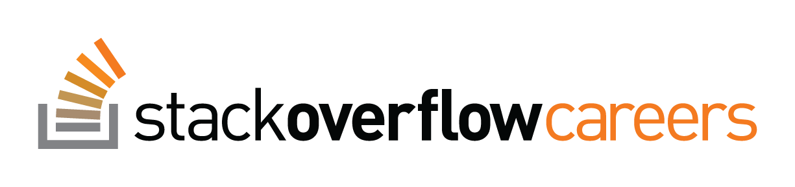
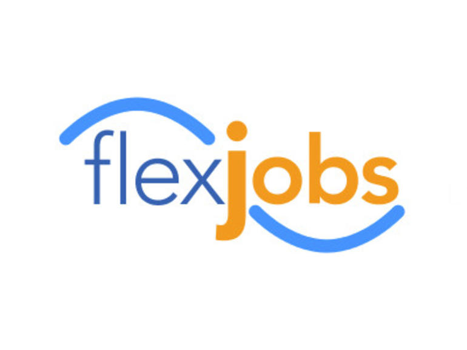
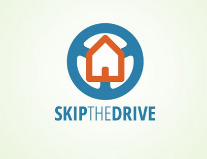
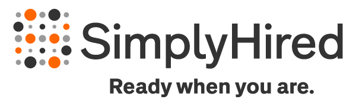

Python merupakan bahasa pemrograman yang mudah dibaca dan dapat digunakan untuk berbagai macam proyek. Apa yang harus dilakukan setelah menguasai Python? Hal yang bisa kita lakukan salah satunya menambah pendapatan dengan kerja di Software House. Namun bila terhalang masalah geografis, karena jauh dari kota besar, kita bisa mencoba kerja remote.
Tren kerja remote mulai menggeliat di Indonesia, namun untuk proyek Python masih jarang. Jika pembaca ingin mencoba kerja remote dengan orang luar negeri, kita bisa mencari peluangnya di situs-situs berikut:
Stack Overflow Careers

Keuntungan yang kita dapat dalam situs ini antara lain: 1) Jumlah proyek untuk Python cukup banyak, 2) Kualitas para pemberi kerja dengan proyek yang cukup rinci.
Kunjungi situs resminya di http://careers.stackoverflow.com
FlexJobs

Situs ini menawarkan berbagai proyek Python untuk semua posisi. Pasarnya juga bagus dan menggabungkan antara perusahaan dan startup.
Kunjungi situs resminya di http://www.flexjobs.com
DjangoGigs
Situs ini juga memberikan peluang proyek Python yang cukup besar. Apabila pembaca menguasai framework Django, ini menjadi poin yang bagus, karena DjangoGigs memang fokus untuk menyediakan pekerjaan bagi pengguna framework Django.
Kunjungi situs resminya di http://www.djangogigs.com
Skip The Drive

Jika menggunakan situs ini kita tak perlu melakukan penyaringan proyek. Sedangkan untuk posisi yang disediakan kebanyakan perusahaan maupun agensi.
Kunjungi situs resminya di http://www.skipthedrive.com
Simply Hired

Simply Hired menyediakan berbagai proyek populer, untuk mencarinya gunakan top ranking. Banyak pilihan yang bisa digunakan untuk penyaringan lokasi maupun kata kunci proyek, diantaranya Remote, Telecommute atau Anywhere. Simply Hired juga menggabungkan perusahaan dan startup untuk posisi pekerjaan yang diinginkan.
Kunjungi situs resminya di http://www.simplyhired.com
Linkedin

Situs yang paling dikenal bagi banyak orang. Untuk proyek Python, Linkedin juga menyediakan banyak peluang. Namun biasanya untuk perusahaan saja, dan opsi yang bisa gunakan untuk penyaringan adalah Telecommute.
Kunjungi situs resminya di http://www.linkedin.com
Proyek Python memang masih jarang di Indonesia, namun bukan berarti Python lemah. Sebenarnya proyek Python lebih banyak dicari di level internasional. Buktinya situs-situs tersebut masih menyediakan proyek Python yang melimpah. Nah jika pembaca seorang programmer Python, jangan khawatir peluang akan selalu ada. Selamat bekerja remote.